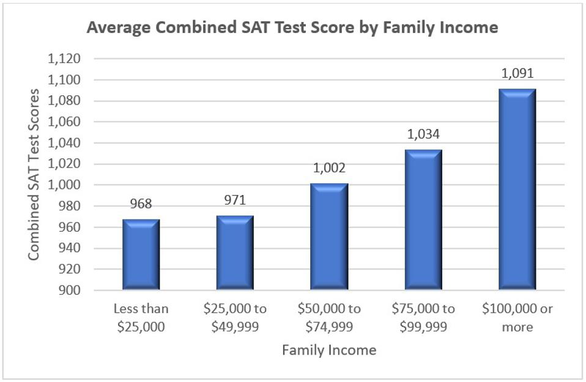
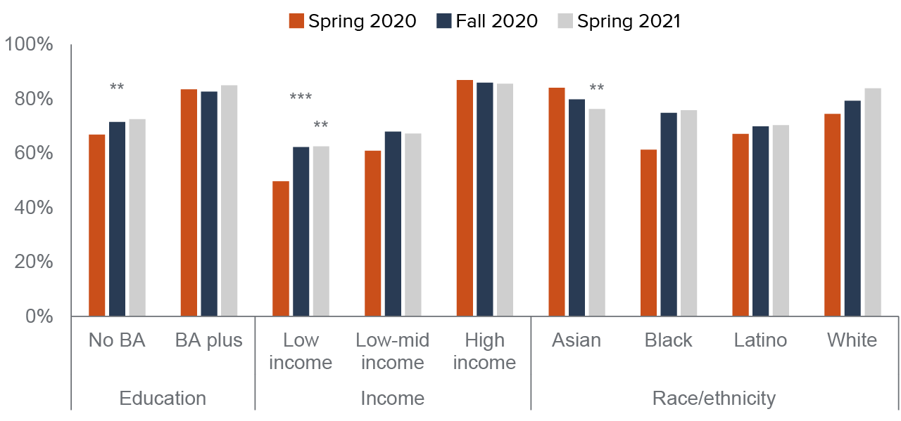

Impact
Who is Affected?
There are several marginalized communities who are affected by this divide, including people of color, lower-income families, people with disabilities,
and those who are not as experienced with technology. As teachers continue to include technology in courses, the divide increases and further perpetuates these
communities. As society is in somewhat of a technological revolution, this gap is growing at an exponential rate.
Lower Quality of Education
The main reason that technology is increasingly being integrated into education is because it that it provides a diverse set of tools to teach students. Depriving
students of readily accessing these technologies creates a disadvantage, as many of the tools are restricted for their use. For example, in many of your classes, you may
have used some form of Google Classroom, Workday, or Canvas as a software to manage your work. It makes your life easier by keeping everything digital, allowing for fast
communication between teacher and students, and has everything in one place. By using these tools, you are provided with a higher quality of education as opposed to a pencil
and paper education.
Standardized Testing

The effects of this gap has a profound impact on standardized testing scores as access to many studying resources and offered online and only by well-funded schools.
Shown above is a graph comparing mean SAT scores among various family incomes. Without a doubt, there is an evident disparity shown, as scores increase in alignment with income.
Digital Divide in the Classroom

This chart shows several marginalized groups with respect to this divide. Some key take aways from this are seeing how income and race both play a role in the percent of students
who have access to devices in their class.
There also exist operational challenges within the classroom, with the distribution of laptops not prioritizing the neediest students. After all, some students may have a
greater need for digital access than others, such as those with learning disabilities or those who are not learning in an environment of their native language.
Long Run Impact
You may be thinking about whether these targeted groups would end up being affected in the long run due to these negative impacts. Without a doubt, there are profound impacts
which these students will face in the future, one of which is college. Two key items which admissions look into when deciding whether to admit a student are grades as well as
standardized scores. Both of these factors are subject to negative influences from lack of access to technology for reasons perviously described. This can also have a chain effect,
which would go on to impact the student's future endeavors in getting a job, and cause a disadvantage economically within society. It is also important to note that as technology is
become a more widely-used tool, posessing the skills to utilize various forms of technology is vital. Without early access to devices, students will be less well-rounded, and less
prepared for many facets of life to come.